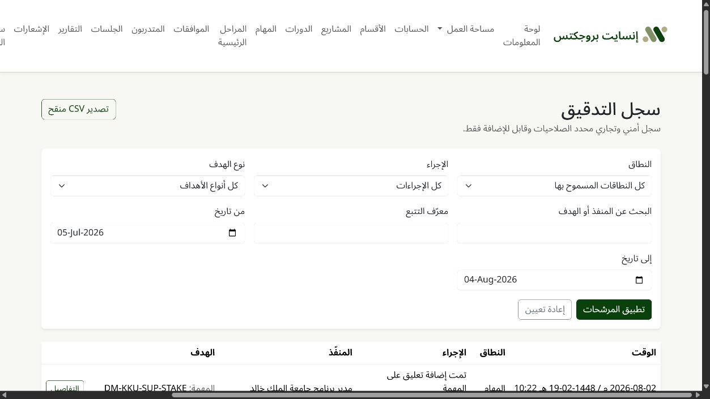

تحكّم في التنفيذ.
وتحقّق من كل نتيجة.
منصة عربية أولاً لإدارة البرامج والمشاريع والفرق والتدريب والموافقات والتقارير والذكاء الاصطناعي المحكوم.
 إنسايت بروجكتسالمشكلة التشغيلية
إنسايت بروجكتسالمشكلة التشغيليةتشتّت التحديثات يخفي مخاطر التنفيذ.
 إنسايت بروجكتسنموذج التشغيلإنسايت بروجكتسالتنفيذ الأساسي
إنسايت بروجكتسنموذج التشغيلإنسايت بروجكتسالتنفيذ الأساسيخطّط، تعاون، ثم اعتمد.
المشاريع والفرق
الأقسام والعملاء والتصنيفات والمسؤولون والمشرفون والأعضاء المشتركون والأولويات والميزانيات والأرشيف والسجل.
المهام والأدلة
مهام متداخلة وإسناد وتقدم وساعات ومعوقات وتعليقات ومرفقات ولوحة Kanban وتقويم وخط زمني وGantt.
محرك التقدم
معادلة مركزية واحدة للمهام والدورات والمشاريع والمراحل الرئيسية والعناصر الملغاة.
موافقة على مرحلتين
المشرف أولاً ثم مدير المشروع، مع الأسباب وإعادة التقديم وسجل ثابت لا يُعاد كتابته.
 إنسايت بروجكتسعمليات التدريبإنسايت بروجكتسالرؤية والحوكمة
إنسايت بروجكتسعمليات التدريبإنسايت بروجكتسالرؤية والحوكمةشاهد العمل وأثبت ما تغيّر.
لوحات المعلومات ومساحة العمل
مؤشرات حسب الدور، ومهام متأخرة، وموافقات، وأحمال عمل، وبحث، وعروض محفوظة، وتنقل متجاوب.
التقارير والتصدير
تقدم المشاريع والمهام المتأخرة والحضور بصيغ PDF وXLSX بالعربية أو الإنجليزية، مع التاريخين الهجري والميلادي.
الإشعارات
أحداث إلزامية داخل النظام وخيارات بريد مترجمة وتفضيلات وإعادة محاولة ومعالجة خلفية.
التدقيق والعمليات
أدلة تدقيق تراكمية، وأرشفة واستعادة، وفحوص صحة، ومهام احتفاظ، وحالة تشغيل آمنة.


إنسايت بروجكتسجديد: موجز ذكاء اصطناعي موثقإنسايت بروجكتسجديد: قناة المدير التنفيذي عبر تيليجرامإنسايت بروجكتسجديد: وكيل تعافٍ محكومإنسايت بروجكتسالبنية والأمنإنسايت بروجكتسأدلة التحققإنسايت بروجكتسالعرض الحيإنسايت بروجكتسقرار التجربة